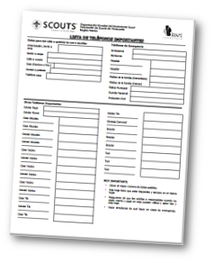
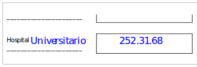

Teléfonos importantes
Es necesario mantener actualizado y a la mano un directorio de teléfonos importantes (emergencias y ayudas) y asegurase de tenerlo siempre a la mano en un lugar conocido y accesible a todos los miembros de la familia.
En el modelo que te facilitamos en este manual (para su impresión), se agrupan en varias categoría.
Es muy importante que:
Llenes la mayor cantidad de información posible, ya que a la hora de usar el directorio no vas a hacer nada con los espacios en blanco. Donde aparece una rayita al lado del título es para que lo personalices según tu caso.
Ejemplo:

Esta hoja esté disponible y siempre en el mismo lugar. De manera que no se pierda tiempo para conseguirla, y que todos en la familia sepan donde está.
Los adultos o responsables cuando no estén mamá y papá en casa
puedan utilizar ( saber leer ) esta hoja. De otra forma la
información no será útil para nada… Así mismo es muy recomendable hacer
simulacros de como actuar en casos de emergencia.